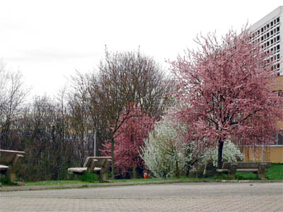

Présentation du Lycée
 |
Inauguré en 1963, le lycée La Martinière-Duchère est l’un des trois lycées de la ville de Lyon portant l’appellation « La Martinière ». Ces derniers sont historiquement liés à la fondation constituée à l’initiative du Major Martin au tout début du XVIII siècle afin de pourvoir à la création et au fonctionnement d’une école gratuite au service du développement de la ville de Lyon. |
Nous accueillons aujourd’hui quotidiennement près de 2300 élèves, dont plus d’un millier d’étudiants, sur un campus de huit hectares. Ouvert sur un quartier en pleine restructuration, le lycée bénéficie d’un site remarquable : au cœur du poumon vert de l’ouest lyonnais, sur les pentes de la troisième colline de la métropole Rhône Alpine et à proximité immédiate du centre ville. Le site est également voisin de TECHLID, pôle économique qui réunit plus de 6000 entreprises scientifiques et tertiaires dont nombre d’établissements leader dans leur domaine d’intervention.
La spécificité de notre établissement tient à la variété et à la complémentarité des parcours qu’il offre à ses élèves, à ses étudiants et ainsi qu’aux adultes en recherche d’un diplôme, d’une qualification ou d’une insertion professionnelle. Outre les séries générales traditionnelles (bacs ES, L, S) et à vocation technologique (ST2S, STG, STL), nous offrons des un riche éventail de poursuites d’études en classes préparatoires aux grandes écoles, sections de techniciens supérieurs, diplômes à Bac +3 et licences professionnelles. Quel que soit son niveau d’entrée au lycée, un élève ou un étudiant peut ainsi bénéficier de classes passerelles et poursuivre ses études jusqu’à « bac +3 », en formation initiale traditionnelle ou même en apprentissage pour certaines sections de techniciens supérieurs. Il bénéficiera tout au long de sa scolarité de possibilités de stages à l’étranger et de nos partenariats avec l’Université ou les grandes écoles ainsi qu’avec le monde professionnel.
La polyvalence de notre lycée répond à la diversité des publics ainsi qu’à un triple défi :
• assurer la pérennité d’un enseignement général et la transmission d’une culture indispensables à tous les niveaux de la formation intellectuelle ou professionnelle des jeunes ;
• favoriser la transmission des valeurs républicaines et la capacité d’adaptation des futurs citoyens en vue de faciliter leur insertion sociale et professionnelle ;
• qualifier, adapter, requalifier et apporter ainsi notre pierre à l’édifice de l’école tout au long de la vie, rendue indispensable dans un monde qui connaît des évolutions extrêmement rapides dans tous les domaines des sciences et des techniques.